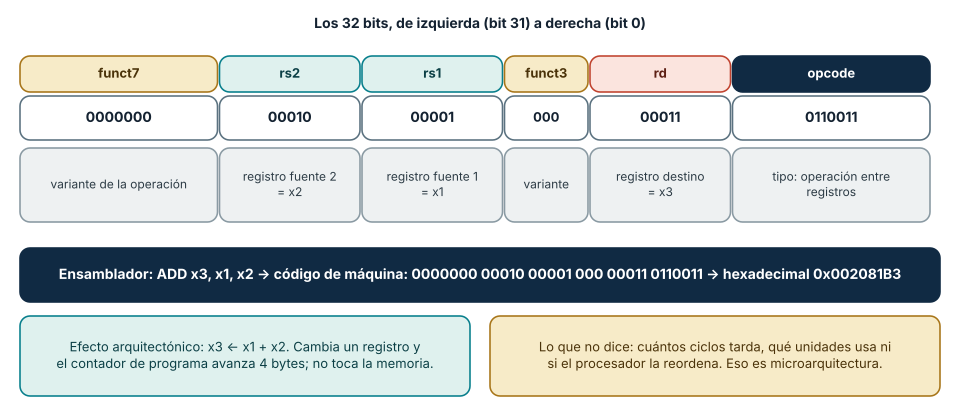
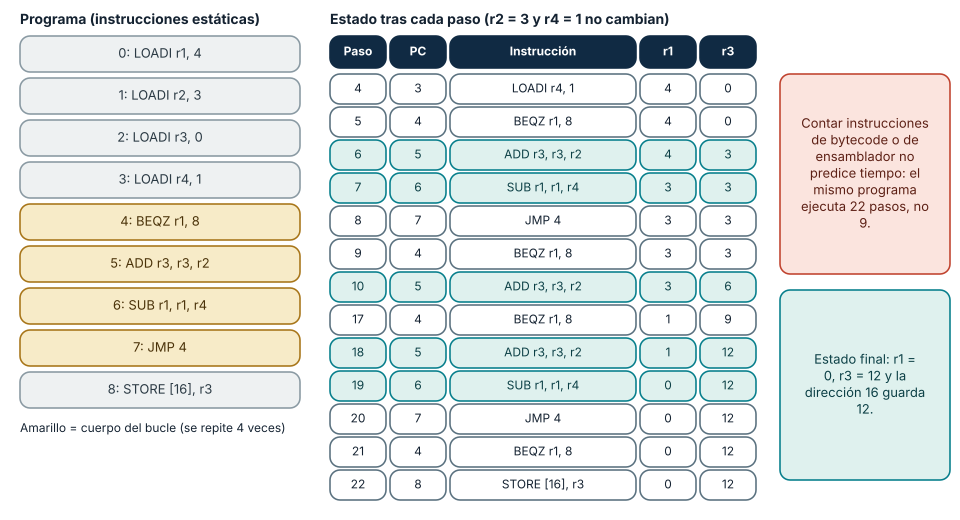
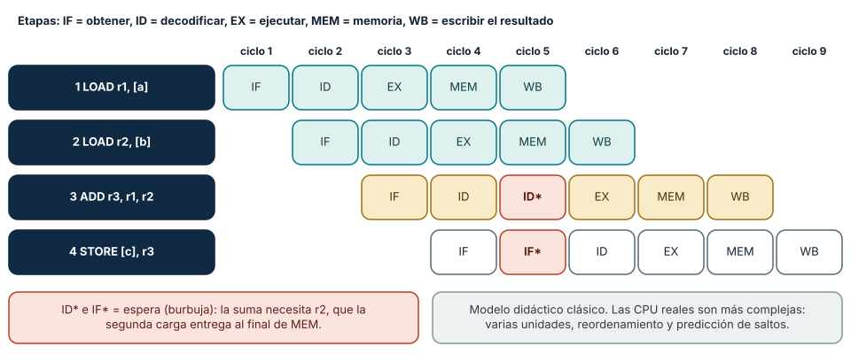

← SE-016 · ↑ Parte 01 · 📚 Índice completo · SE-018 →
Punto profesional y fundamento pedagógico
Punto profesional. La clase existe para explicar instrucciones como transiciones de estado sin confundir bytecode con ISA.
Por qué aparece aquí. Se sitúa después de Enteros, coma flotante, precisión y errores numéricos y antes de Memoria, cachés, almacenamiento y jerarquías: convierte el conocimiento anterior en una decisión observable que la clase siguiente podrá reutilizar. La continuidad se comprueba en el artefacto, no por compartir vocabulario.
Error conceptual que debe corregir. Leer la salida de dis como ensamblador o convertir bytecodes en ciclos de CPU.
Secuencia de aprendizaje. Traza primero una secuencia ISA didáctica a mano, con preestado y postestado. Después compárala con el bytecode de CPython y marca toda correspondencia que no puedas demostrar. Invierte un salto, localiza la primera divergencia y reconstruye la explicación sin convertir instrucciones virtuales en ciclos físicos.
Evidencia de aprendizaje. Execution-trace.md con estados antes/después y la frontera VM↔ISA. Debe contener predicción previa, observación, explicación causal, contraejemplo, criterio de aceptación y una nota de qué dato haría cambiar la conclusión.
Límite de la conclusión. Sin código nativo y contadores no se afirman instrucciones físicas ni ciclos.
Trazabilidad fuente → afirmación
| Fuente primaria u oficial | Afirmación que respalda | Lo que no prueba |
|---|---|---|
| RISC-V Unprivileged ISA | define instrucciones y estado arquitectónico | No demuestra por sí sola que el artefacto del estudiante sea correcto. |
Python dis | documenta bytecode específico de CPython y su carácter cambiante | No demuestra por sí sola que el artefacto del estudiante sea correcto. |
Antes de empezar
SE-016 explicó qué representan los operandos. Ahora seguirás cómo una CPU cambia estado al cargar, operar, comparar y saltar. El analizador local de eventos aporta una suma sencilla; la clase la convierte en una traza arquitectónica. SE-018 añadirá el costo de obtener los datos.
Prerrequisitos
Bits, hexadecimal, enteros y mapa de capas de SE-013–SE-016.
Problema auténtico
Un equipo atribuye un retraso al “número de instrucciones” observado en bytecode. Pero bytecode, instrucciones de ISA y operaciones internas no son la misma unidad. Optimiza una métrica que no corresponde al procesador.
Objetivos observables
Distinguirás ISA de microarquitectura; explicarás registros, contador de programa, load/store, ALU y saltos; trazarás estado arquitectónico; y limitarás inferencias sobre pipeline o ciclos.
Temas y por qué importan
| Tema | Mecanismo | Por qué importa |
|---|---|---|
| ISA | define operaciones y estado visibles | sostiene compatibilidad binaria |
| Registros y PC | conservan operandos y próxima instrucción | permiten seguir ejecución |
| Ciclo de instrucción | obtiene, decodifica y aplica efectos | conecta programa con transiciones |
| Microarquitectura | solapa y reordena trabajo internamente | explica rendimiento sin cambiar semántica |
Mapa conceptual
Ver la notación fuente del diagrama
flowchart LR
PC[PC] --> F[Fetch]
F --> D[Decode]
D --> X[Execute]
X --> M[Memory]
M --> W[Write result]
W --> PCEs un modelo lógico. Una implementación puede solapar etapas, ejecutar fuera de orden y retirar resultados en orden; no debe leerse como un ciclo físico universal.
Conceptos y decisiones
1. La ISA es el contrato, no el diagrama interno
Una ISA define instrucciones, registros, formatos y efectos observables. La misma ISA puede tener implementaciones simples, segmentadas o fuera de orden. El software confía en el resultado arquitectónico, no en cada señal interna.

Cómo leer la figura. Una instrucción es *datos*: treinta y dos bits repartidos en campos. El opcode (0110011) dice que es una operación entre registros; funct7 y funct3 precisan cuál (aquí, una suma); rs1 y rs2 nombran los registros fuente (x1 y x2) y rd, el destino (x3). El hexadecimal 0x002081B3 es esa misma secuencia agrupada de a cuatro bits. Dónde deja de valer: es el formato de una familia de instrucciones de RISC-V. Otras ISA usan longitudes distintas (x86 tiene instrucciones de 1 a 15 bytes) y RISC-V incluye una extensión comprimida de 16 bits; la idea común es que la ISA define cómo se interpretan los bits, no que todas las instrucciones midan igual.
6. Decodificar: de bits a efecto arquitectónico
Decodificar es leer los campos y decidir qué cambiar. En el ejemplo, el decodificador extrae rs1 = 1 y rs2 = 2, lee esos dos registros, la unidad aritmética suma y el resultado se escribe en el registro rd = 3; el contador de programa avanza cuatro bytes porque la instrucción ocupa cuatro. Una instrucción de *salto* en cambio sustituye el contador de programa por un valor calculado, y una de *carga* calcula una dirección y trae un dato desde memoria. Ese contrato es lo que el software observa: *qué registros y qué memoria cambian y cuál es la siguiente instrucción*. No incluye cuántos ciclos tarda ni qué circuitos se activan.
Esta separación explica por qué un mismo binario funciona en procesadores de generaciones y fabricantes distintos, y por qué la compatibilidad binaria es una propiedad de la ISA y de la ABI (la convención de llamadas y de representación de datos), no de la frecuencia ni del número de núcleos. También explica que la ISA sea un compromiso de largo plazo: cada instrucción añadida debe mantenerse en las generaciones futuras.
7. Ejecutar un programa a mano: estado, traza e instrucciones dinámicas
Para razonar sobre un programa en este nivel hace falta una *traza*: para cada instrucción, el contador de programa, la operación y el estado de registros y memoria después de ejecutarla. La Figura 2 muestra la de un programa didáctico de nueve instrucciones que multiplica 4 por 3 con sumas repetidas. El programa se puede ejecutar con un simulador mínimo de unas veinte líneas:
prog = [("LOADI", "r1", 4), ("LOADI", "r2", 3), ("LOADI", "r3", 0), ("LOADI", "r4", 1),
("BEQZ", "r1", 8), ("ADD", "r3", "r3", "r2"), ("SUB", "r1", "r1", "r4"),
("JMP", 4), ("STORE", 16, "r3")]
regs, mem, pc, ejecutadas = {"r1": 0, "r2": 0, "r3": 0, "r4": 0}, {}, 0, 0
while pc < len(prog):
op, *a = prog[pc]
pc += 1
ejecutadas += 1
if op == "LOADI": regs[a[0]] = a[1]
elif op == "ADD": regs[a[0]] = regs[a[1]] + regs[a[2]]
elif op == "SUB": regs[a[0]] = regs[a[1]] - regs[a[2]]
elif op == "STORE": mem[a[0]] = regs[a[1]]
elif op == "BEQZ" and regs[a[0]] == 0: pc = a[1]
elif op == "JMP": pc = a[0]
print(ejecutadas, mem) # 22 {16: 12}El resultado es una distinción que se pierde si solo se mira el código: el programa tiene nueve instrucciones estáticas (las escritas) pero ejecuta veintidós instrucciones dinámicas (cuatro de preparación, cuatro vueltas de cuatro instrucciones, la comprobación final y el almacenamiento). Contar líneas, o bytecode, no dice cuántas instrucciones se ejecutan: depende de los datos. Lo mismo ocurre con una línea de Python como sum(x), que ejecuta un número de instrucciones nativas proporcional al tamaño de x.

Cómo leer la figura. A la izquierda están las nueve instrucciones, con el cuerpo del bucle en amarillo. A la derecha, el estado tras cada paso: r1 baja de 4 a 0 mientras r3 sube de 3 en 3 hasta 12. En el paso 21 BEQZ ve r1 = 0 y salta a la dirección 8, y el paso 22 almacena el resultado. Dónde deja de valer: el simulador ejecuta una instrucción a la vez y sin errores. Una CPU real puede solapar varias, adelantar otras y especular sobre el resultado del salto, pero tiene que *parecer* que ejecutó en ese orden, lo que se llama mantener el estado arquitectónico.
8. Dependencias, burbujas y por qué contar instrucciones no predice el tiempo
Una forma sencilla de acelerar un procesador es la *segmentación* (pipeline): dividir cada instrucción en etapas (obtener, decodificar, ejecutar, acceder a memoria, escribir) y solapar instrucciones distintas en etapas distintas. En condiciones ideales se completa una instrucción por ciclo aunque cada una tarde cinco. Las *dependencias de datos* impiden que sea siempre así: en la Figura 3, la suma necesita r2, que la segunda carga solo tiene disponible al final de su etapa de memoria. Con reenvío de resultados la espera se reduce a un ciclo (una *burbuja*), y las cuatro instrucciones terminan en nueve ciclos en lugar de ocho.

Cómo leer la figura. Cada fila es una instrucción y cada columna un ciclo. Las filas están desplazadas un ciclo porque cada instrucción entra detrás de la anterior. Las casillas rojas con asterisco son esperas: la suma queda detenida en la decodificación y arrastra a la instrucción siguiente. Dónde deja de valer: es el pipeline clásico de cinco etapas de los libros de texto. Los procesadores modernos tienen decenas de etapas, varias unidades de ejecución, ejecución fuera de orden y predicción de saltos; el modelo explica *por qué* existen las dependencias, no cuántos ciclos tarda un procesador concreto.
El rendimiento se resume en la ecuación clásica: *tiempo de CPU = instrucciones × ciclos por instrucción (CPI) × periodo del reloj*. Reducir instrucciones ayuda solo si el CPI no empeora; subir la frecuencia ayuda solo si no aumentan las esperas de memoria. Los saltos añaden otra dependencia: la CPU predice el resultado para no detenerse, y si se equivoca descarta el trabajo especulativo. La semántica se conserva, pero el estado interno (por ejemplo, qué hay en las cachés) no vuelve exactamente al anterior, y esa diferencia puede observarse como tiempo. Los ataques de ejecución especulativa conocidos como Spectre explotaron precisamente esa brecha entre lo que garantiza la ISA y lo que revela la microarquitectura; es un recordatorio de que «no cambia el resultado» no equivale a «no deja rastro».
2. Los registros sostienen el estado inmediato
Registros generales guardan operandos y resultados de acceso rápido. El contador de programa localiza la siguiente instrucción; otros registros representan estado de control. Su cantidad y reglas pertenecen a la ISA. “Variable” no significa “registro”: compilador y runtime deciden ubicación y pueden moverla.
3. Load/store separa cálculo y acceso a memoria
En una ISA RISC típica, instrucciones load traen datos, la ALU opera registros y store escribe. Direcciones, alineación y permisos pueden producir excepciones. Una suma de alto nivel implica además comprobaciones, representación de objetos y llamadas según lenguaje y runtime.
4. Saltos convierten condiciones en control
Comparaciones y branches cambian el PC. Bucles y decisiones surgen de esas transiciones. Una predicción de salto intenta mantener ocupada la máquina; si falla, descarta trabajo especulativo. La semántica correcta permanece, pero tiempo y efectos laterales microarquitectónicos requieren análisis aparte.
5. Pipeline, ejecución fuera de orden y retiro
Solapar instrucciones mejora throughput cuando no existen dependencias. La CPU puede ejecutar operaciones listas antes que otras y retirar resultados de manera que el estado visible respete el contrato. Contar instrucciones no basta para predecir ciclos: dependencias, memoria, unidades y predicción influyen.
Caso conductor: sumar dos contadores del analizador local de eventos
La traza didáctica usa LOAD r1,[a], LOAD r2,[b], ADD r3,r1,r2, STORE [c],r3. Para cada paso registra PC, registros y memoria afectada. Después marca qué aspectos no conoce: caché, latencia, instrucciones generadas realmente y optimizaciones.
Definiciones de trabajo
- instrucción: operación definida por una ISA;
- registro: almacenamiento nombrado visible para la ISA;
- PC: estado que identifica la próxima instrucción;
- pipeline: solapamiento de etapas;
- retiro: compromiso de resultados al estado arquitectónico.
Glosario
Opcode identifica operación. Operando aporta datos. Hazard es una condición que impide avanzar sin control. Excepción transfiere control por un evento síncrono.
Ejemplo mínimo
ADD r3,r1,r2 cambia r3, no memoria. Si r1=2 y r2=3, el nuevo estado visible es r3=5; la cantidad de transistores activados no forma parte del contrato.
Ejemplo profesional
Dos procesadores ejecutan el mismo binario con tiempos distintos. La corrección se evalúa por ISA/ABI; el rendimiento se mide por entorno. No se cambia algoritmo basándose solo en frecuencia anunciada.
Práctica guiada
Usa como base el laboratorio ejecutable de la Parte 01; trabaja sobre una copia o conserva tus salidas en el directorio work/SE-017/.
- Crea
trace.mdcon ocho posiciones de memoria, cuatro registros y PC. - Ejecuta manualmente la secuencia del analizador local de eventos y anota pre/postestado.
- Añade comparación y salto para manejar contador cero.
- Introduce dirección inválida y describe excepción sin inventar manejo del SO.
- Compara la traza con
dis.disde una función Python y explica por qué no son equivalentes. - Entrega
isa-model.md,trace.md,limits.md.
Ejercicios
- Identifica dependencias de datos en cinco instrucciones.
- Explica por qué más instrucciones pueden tardar menos en otra CPU.
- Diseña un contraejemplo a “cada línea ejecuta una instrucción”.
Reto verificable
Otra persona reproduce la traza y obtiene el mismo estado final. Debe distinguir tres hechos de la ISA y tres incógnitas de microarquitectura.
Preguntas frecuentes
¿Fetch–decode–execute describe cualquier CPU?
Es un modelo útil; no prescribe organización física ni número de ciclos.
¿Bytecode es ensamblador?
Es un conjunto de instrucciones para una máquina virtual, no necesariamente la ISA física.
¿Por qué RISC-V y x86 hacen lo mismo con instrucciones distintas?
Porque la ISA es un contrato con otro diseño. RISC-V es una arquitectura de carga y almacenamiento con instrucciones de longitud regular; x86 tiene instrucciones de longitud variable, y muchas pueden operar directamente con la memoria. Los procesadores x86 actuales traducen internamente sus instrucciones a operaciones más simples. Dos ISA pueden calcular lo mismo con tiempos y costos de implementación distintos.
¿Qué es el CPI y por qué importa?
Son los *ciclos por instrucción* promedio de un programa en un procesador. Un CPI cercano a 1 indica que el procesador completa casi una instrucción por ciclo; un CPI alto señala esperas (memoria, saltos mal predichos, dependencias). Se obtiene con contadores de hardware, que Python no expone, de modo que en esta clase se razona sobre él sin medirlo.
¿Las instrucciones privilegiadas y las excepciones forman parte de la ISA?
Sí. La ISA define también los modos de ejecución, las excepciones (una dirección inválida o una instrucción ilegal transfieren el control al sistema operativo) y las instrucciones que solo el núcleo puede ejecutar. Es lo que permite que el sistema operativo aísle procesos, tema de SE-019.
Fallo controlado y diagnóstico
Cambia un salto para usar la condición opuesta. Registra PC y primer estado divergente; corrige la condición, no el resultado final a mano.
Un segundo fallo controlado usa el simulador de la sección 7. Cambia BEQZ por una instrucción que salte cuando el registro *no* sea cero (BNEZ) sin ajustar la dirección de destino. Síntoma: el programa termina de inmediato con r3 = 0 y la dirección 16 guarda 0 en lugar de 12. Traza: busca el primer paso en que el contador de programa difiere del original (el paso 5, donde ya salta al final con r1 = 4). Causa: la condición opuesta invierte el control del bucle. Corrección: invierte la condición *y* verifica el destino, y escribe una prueba con r1 = 0 al inicio (cero vueltas) y con r1 = 1. Añade un límite de pasos al simulador para que un bucle infinito falle con un mensaje y no se cuelgue; esa protección es el equivalente de un tiempo de espera en producción.
Errores comunes y cómo corregirlos
| Síntoma | Causa | Corrección |
|---|---|---|
| variable = registro | abstracciones mezcladas | documenta decisiones de compilador/runtime |
| una instrucción = un ciclo | modelo simplificado literal | separa ISA y microarquitectura |
dis se presenta como código nativo | VM confundida con CPU | etiqueta el nivel de instrucción |
| traza solo muestra resultados | transiciones invisibles | registra preestado, operación y postestado |
Entorno y archivos clave
Markdown y Python dis; isa-model.md, trace.md, limits.md. Sin ensamblador ejecutable.
Seguridad, ética y accesibilidad
No ejecutes binarios ni uses contadores privilegiados. Describe el diagrama en texto y no uses rendimiento supuesto para excluir hardware accesible.
Puente hacia el trabajo con agentes
Un asistente que optimiza código a menudo razona con la ecuación de las «instrucciones»: elimina una llamada o reescribe un bucle porque *parece* más corto. La traza de esta clase enseña a pedir evidencia del nivel correcto: un perfil de tiempo, el recuento de instrucciones dinámicas con herramientas del sistema o una medición repetida, y no la afirmación de que el cambio «ejecuta menos». Cuando un agente propone un cambio de rendimiento, exige el criterio de aceptación antes de aplicarlo (qué métrica, en qué entorno, cuántas repeticiones) y desconfía de optimizaciones que dependen de supuestos sobre la CPU. Tampoco permitas que un agente ejecute binarios desconocidos para «comprobar» una hipótesis: la clase ya fija como regla no ejecutar código no confiable.
Transferencia
Compara una instrucción RISC-V documentada con bytecode de JVM o Python y delimita contratos.
Evaluación y evidencia
Se exigen traza reproducible, dependencias, excepción y límites de microarquitectura.
Fuentes
- RISC-V Unprivileged ISA define instrucciones y estado arquitectónico.
- Python
disdocumenta bytecode específico de CPython y su carácter cambiante. - David Patterson y John Hennessy, *Computer Organization and Design: RISC-V Edition* (Morgan Kaufmann, ISBN 978-0-12-812275-4): formatos de instrucción, pipeline de cinco etapas, dependencias y la ecuación del tiempo de CPU; respalda las secciones 6 a 8.
- Paul Kocher et al., «Spectre Attacks: Exploiting Speculative Execution», IEEE Symposium on Security and Privacy 2019, DOI 10.1109/SP.2019.00002, y el sitio de divulgación: muestran que el estado microarquitectónico puede filtrar información aunque el estado arquitectónico se conserve.
Límites y siguiente paso
No mide ciclos físicos ni cubre ensamblador completo. SE-018 añade jerarquías y localidad.